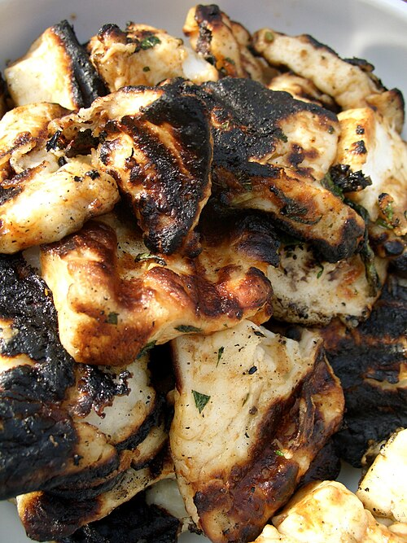

Grilled Greek Chicken

The secret to this simple grilled chicken is a very powerful marinade and roasting it slowly over
semi-indirect head on the grill.
| Prep Time: |
Cook Time: |
Additional Time: |
Total Time: |
Servings: |
| 15 mins |
20 mins |
4 hrs |
1 hr |
6 |
Ingredients
- 6 cloves garlic (or more to taste), crushed or very finely minced
- 2 tablespoons dried oregano
- 1 teaspoon red pepper flakes (or more to taste)
- 1 teaspoon freshly ground black pepper
- 1/2 cup lemon juice
- 1/4 cup olive oil
- 1 tablespoon distilled white vinegar
- 1 lemon cut into wedges
Steps
- Whisk garlic, oregano, red pepper flakes, black pepper, lemon juice, olive oil, and
vinegar together in a large bowl.
- Make 2 slashes on the skin side down to the bone in the thigh section and 1 in the
leg section of each leg quarter. This will help infuse pieces with marinade and allow faster cooking on the
grill. Season both sides of chicken generously with kosher salt. Transfer to bowl with marinade and
thoroughly coat all sides. Cover and marinate in refrigerator 4 to 12 hours.
- Transfer chicken to paper-towel-lined sheet pan to drain slightly.
- Place leg quarters on grill skin side down over semi-direct heat (avoid intense
direct heat so chicken cooks evenly and skin doesn't burn). Cook 6 or 7 minutes. Turn chicken and cook
another 6 to 7 minutes. Continue cooking and turning until internal temperature reaches 165 degrees F (74
degrees C), 8 to 10 more minutes. Serve with lemon wedges.
Recipe Tip
This is so flavorful that you really don't need a sauce, but some fresh lemon is nice, as is a spicy yogurt. Just
squeeze a little lemon into some nice thick Greek yogurt, spike it with hot sauce, and you have a perfect
condiment.
Home